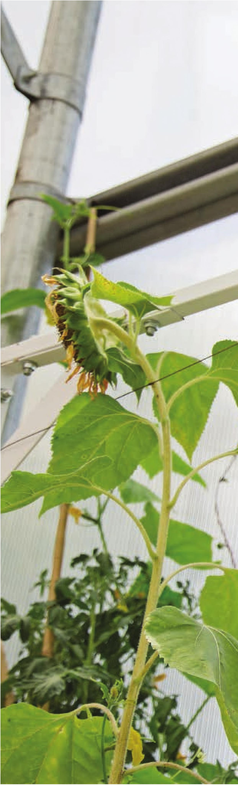
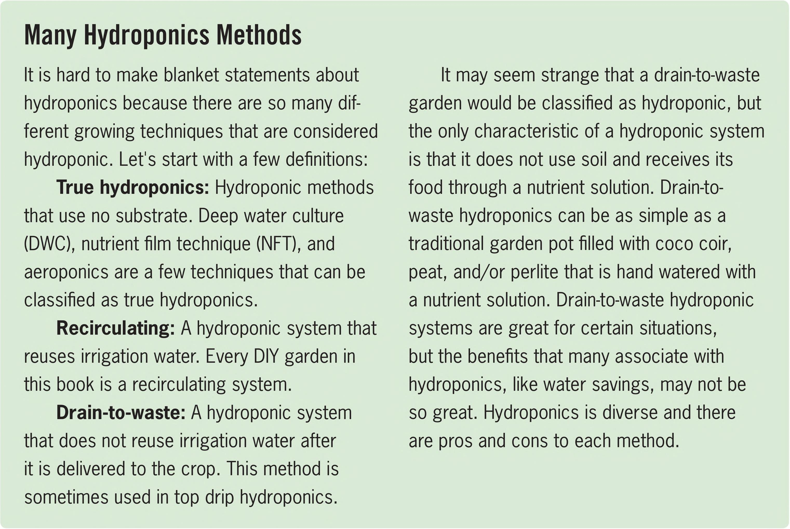

Many Hydroponics Methods It is hard to make blanket statements about hydroponics because there are so many different growing techniques that are considered hydroponic. Let's start with a few definitions: True hydroponics: Hydroponic methods that use no substrate. Deep water culture (DWC), nutrient film technique (NFT), and aeroponics are a few techniques that can be classified as true hydroponics. Recirculating: A hydroponic system that reuses irrigation water. Every DIY garden in this book is a recirculating system. Drain-to-waste: A hydroponic system that does not reuse irrigation water after it is delivered to the crop. This method is sometimes used in top drip hydroponics. It may seem strange that a drain-to-waste garden would be classified as hydroponic, but the only characteristic of a hydroponic system is that it does not use soil and receives its food through a nutrient solution. Drain-towaste hydroponics can be as simple as a traditional garden pot filled with coco coir, peat, and/or perlite that is hand watered with a nutrient solution. Drain-to-waste hydroponic systems are great for certain situations, but the benefits that many associate with hydroponics, like water savings, may not be so great. Hydroponics is diverse and there are pros and cons to each method. for soil not have all the required nutrients, but the nutrients are usually derived from sources that can foul the water in a hydroponic garden. For example, manure is commonly used for soil-based gardening but is almost never used in hydroponics. Most animal-derived fertilizer sources like manure, blood meal, bone meal, fish meal, and feather meal will create horrible odors when used in a hydroponic garden. One of the major advantages of soil gardening is the ability to use these animal-derived fertilizers, which are generally by-products of the meat industry. Soil gardening provides a great opportunity to use these by-products for a great purpose (growing plants) instead of going straight to a landfill. Most hydroponic fertilizers, and fertilizers in general, are created using mined minerals and products from energy-intensive methods, such as the Haber-Bosch process, which converts atmospheric nitrogen gas (N2) into ammonia (NH3). This ammonia is used to create fertilizers like urea (CO ( N H2)2) and ammonium nitrate (NH4N03). Modern agriculture heavily relies on mined and synthetic fertilizers. It is estimated that half of the nitrogen fertilizer applied to crops comes from chemical sources. These fertilizers are growing crops that feed billions of humans. The pros and cons of synthetic versus natural fertilizers are incredibly nuanced. When focusing on one attribute, it can appear that one fertilizer source is far superior to another, but the whole picture is far more complicated. For example, the manufacturing of synthetic fertilizers has a significant carbon footprint. Synthetic fertilizers, however, are far more concentrated than natural fertilizers and can be shipped more efficiently. Synthetic fertilizers are very clean and precise, which is great for hydroponics. The use of synthetic fertilizers makes it possible for some 16 DIY HYDROPONIC GARDENS

